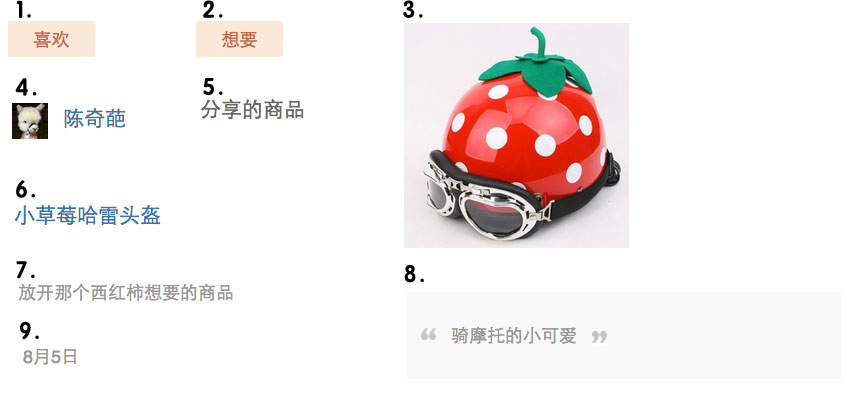
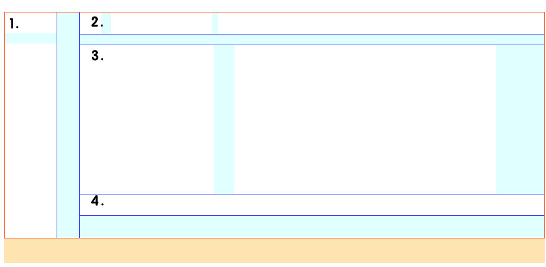
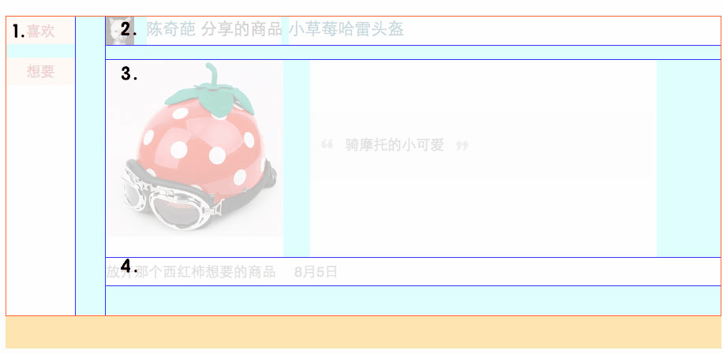
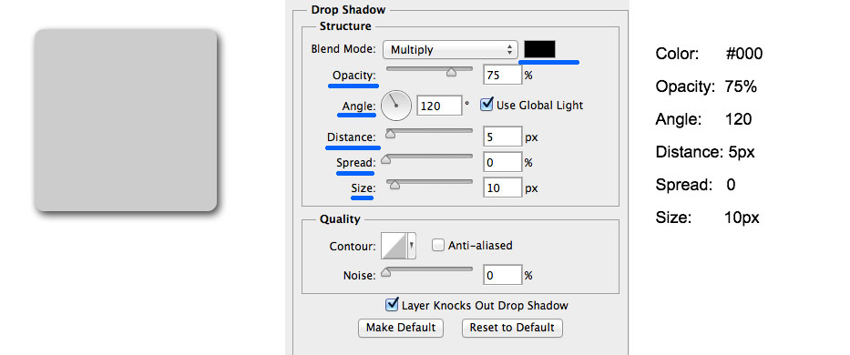
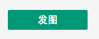
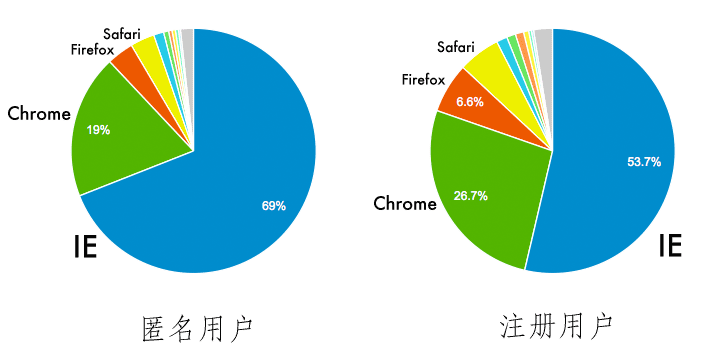
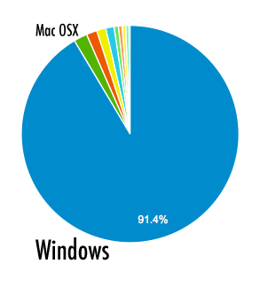
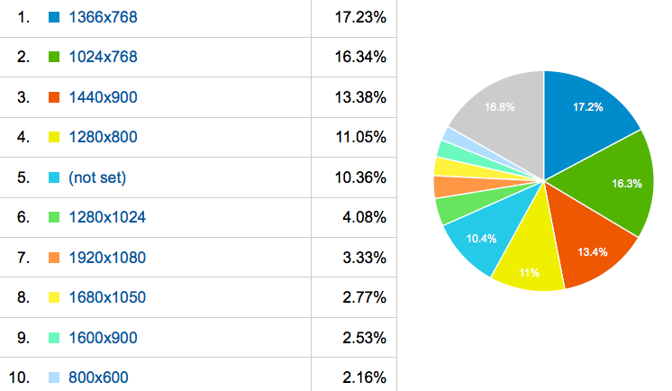
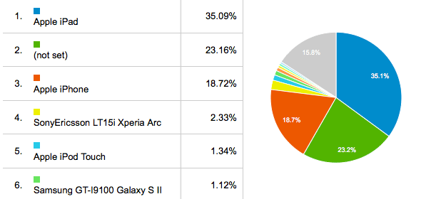

"活"的设计(Living Design, 简称LD)?
现象: 设计师只关心工程师做出来的跟设计稿是否完全一致
设计过程：IA / Wireframe > 交互 / Prototype > 视觉 / UI Spec, 只用一个设计稿能概括吗？
设计稿是"死"的, 文档也是"死"的，花大量时间精力不值的。流趟真实数据、可以操作、有"人气儿"，才是"活"的
"活"的设计?
生命体基本特征的类比：
- 体内平衡 ············ 平衡性，灵活适配内容的变化。文字长度、图片尺寸等各种可能情况
- 组织性 ············ 由UI元素构成(原子设计、卡片设计)
- 新陈代谢 ············ 新的UI元素不断替代旧的元素。保持整体设计的活力
- 生长 ············ 由最小可用的形态，不断迭代，持续完善
- 适应性 ············ 能适应用户使用环境(响应式设计, RWD)
- 反应性 ············ 响应用户各种操作（mouse、keyboard、touch、gesture），拥有各种状态(错误、失效、等待、处理...)
- 繁殖 ············ 基于现有的设计系统之上，快速构建新的产品原型
定义：LD是由有组织的UI元素构成，能适应不同的使用环境，响应用户的行为，灵活适配内容，可扩展、可继承的设计。不再只是满足单一情景下的特定形式。
4大基本特性: 适配性、响应性、组织性、扩展性。
围绕LD的工作流
1.产品目标 > 2.设计问题 > 3.构思模型 > 4.设计实现(ID&VD) > 5.真实的产品
PM
PRD
Designer
设计稿
FE
模板
BE
上线
User
专业圈子越来越大，但没有交集，自得其乐。乐趣点不再是最终的产品
改进：努力影响前面的环节，信息不均衡，沟通过程艰巨，效果不佳。更多时候产品设计的讨论时间被拖长，挤占开发时间，最后不能很好还原产品设计
继续改进：需要用一种观念来打破。LD包含的设计思想和技术问题，能建起一个共同追求的目标。一切为了做出一个更好的产品。
围绕LD，重构产品实现环节:
- 拆分设计过程：1. IA+ID、2. VD
- 根据IA+ID，快速原型。Designer/FE/BE在一起，不断迭代原型(由小到大的"生长"过程)。前期"粗猛快"，着重于架构、模板组织上
- VD参考原型。以UI元素为粒度的，系统化的视觉设计，持续更新
- 后期陆续还原所有细节
LD的设计思想
核心思想：解构和组合。简而言之，解构到信息元素的粒度，设定它的属性和行为，再根据结构关系(layout)和使用场景(page)组合起来。
如果简单按设计稿还原，会在开发最后阶段甚至上线后暴露出一些问题(有些时候可能颠覆设计)：
- 商品名通常很长，会拆行
- 真实图片的比例多样，现有缩略图的尺寸不符
- 左边的button会变化，如不是"分享的商品"而是"推荐的电影"
- 有button是链接，有的带交互
- 有没有评论内容
- 时间的显示
运用LD思想：
第1步，组织性原则的运用 － UI由有组织的元素构成。分解构成元素（哪些现有设计系统里有的，哪些是新的）：

设定单个元素的属性和行为。属性包括：尺寸、最大范围、行高、字号、颜色、字数长度、对齐方式。行为包括：异步操作说明。
设计的范围缩小到更小的粒度，更容易发现细节。
提前暴露细节，一个细节对应一个技术问题，举例：
垂直居中：
图片展现，截图：
第2步，分解结构。设定区域(1~4)和区域间的关系：

结构和元素后期需求变更，互不影响。
第3步，组合。间距、对齐。

第4步，实现。应用层的代码架构和模板的组织方式跟设计是一一对应的。表里如一。
Designer ＋ F2E紧密协作，才能达成。为此需要用技术消除障碍，举例：
"Preprocessors are the rosetta stone between Designers & Developers" 出自 Tim Hettler - CSSConf 2013 http://timhettler.github.io/cssconf-2013/

CSS3的语法：
.sampl1 { box-shadow:0 1px 20px rgba(0, 0, 0, .75); }
SCSS:
.sampl1 { @include rs-box-shadow(#000, .75, 120, 5, 0, 10); }
还原LD - 组织性 - "细胞"
A项目的css - UI元素的组织性，一目了然
|-- libs.scss 基本的mixin库
|-- reset.scss 为这个应用订制的css reset(你会发现通用文件越来越难hold住全站，原则是拆解、定制)
|-- buttons.scss 通用UI元素－button
|-- font_icons.scss 通用UI元素－字体icon。适配性更强
|-- item.scss 通用UI元素－条目。
|-- progress_bar.css 通用UI元素－进度条
|-- tips.scss 通用UI元素－Tips
|-- list.scss 通用UI元素－列表
|-- layout_col2.scss 结构
|-- ui JS组件的样式文件
| |-- overlay.scss
| `-- tag_input.scss
|-- mod_create.scss 通用业务模块: mod_开头
|-- mod_edit_desc.scss
|-- mod_gallery_info.scss
|-- mod_gallery_intro.scss
|-- mod_gallery_list.scss
|-- mod_nav_list.scss
|-- mod_picture_list.scss
|-- mod_picture.scss
|-- mod_publish.scss
|-- mod_upload.scss
|-- member_list.scss 特定页面用到的业务代码
|-- user_profile_head.scss
`-- ui.scss 这个应用的全局css文件
还原LD - 组件化的系统
把"细胞"们组织在一起，并且顺利的"新陈代谢"(后期维护)
A项目中最复杂的其实是一个"button"

简单部署到任何场景(page)下：
<%include file="/widgets/btn_publish.html" args="gallery=gallery" />
内部：
<%block filter="collect_css">
/* 依赖的CSS */
${istatic('/css/ui/overlay.css')|n}
${istatic('/css/mod_publish.css')|n}
${istatic('/css/tips.css')|n}
...
</%block>
<%block filter="collect_js">
// 依赖的Javascript
Do.ready(function() {
${istatic('/js/upload_pic.js')|n}
});
</%block>
<script type="text/template" id="tmpl-publish-picture">
// 依赖的Javascript模板
</script>
% if request.user:
% if not gallery.is_member(request.user):
<a href="#" class="btn a_show_tips">发图</a>
${self.tips('只有xxx才能发图。')}
% else:
<a href="${url()}add_picture" class="btn btn-publish-picture">发图</a>
% endif
% else:
<a href="${url()}add_picture" class="btn a_show_login">发图</a>
% endif
还原LD - 响应性
用户的使用环境：
1. 浏览器: 高端浏览器 > 低端浏览器

2. 操作系统: 设计师不能只看iMac里的效果

3. 屏幕分辨率: 转变成多元化

4. 移动端设备: iOS略高于Android，tablet略高于phone

谈响应式设计(RWD)不仅仅局限于页面布局，也不仅仅局限于手机、平板和桌面的适配。
响应式设计指更好适应用户的使用环境。FE: 向前兼容。Designer: 基本设计 ＋ 增强feature..., 举例：
Sorry! 暂不支持你的浏览器，请用Chrome打开...